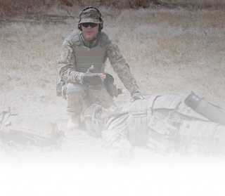

<section class="fifth">

  

  <div class="container">

    <div class="fifth__box">
      In the event that a soldier enters an area with unbreathable air, this unit will significantly increase his chances of survival. Most importantly, however, the use of the SAROS 3000 increases the survival rate of wounded soldiers by an average of 500 percent. One of the main reasons soldiers die before receiving first aid is blood loss. The main job of blood is to move oxygen through the body. Oxygen is exactly what the SAROS 3000 can provide the wounded soldier with in sufficient quantity, significantly increasing his chance of survival.
    </div>

  </div>
</section>